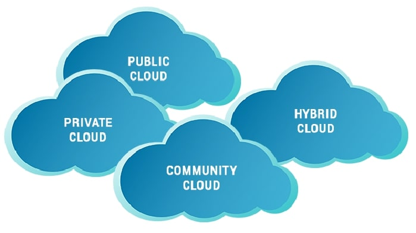
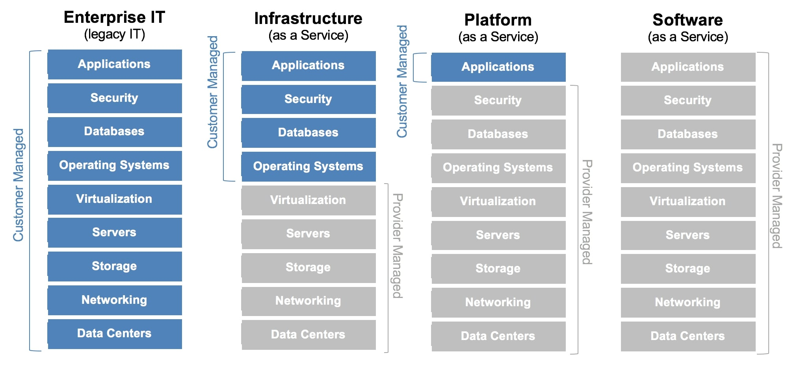

Les services du cloud

Le cloud est partout même si vous le remarquez rarement. Vous interagissez avec le cloud dès le matin en vérifiant la présence de nouveaux e-mails sur notre téléphone jusqu'au soir avant d'aller au lit. Les services cloud sont nouveaux ici aussi lorsque vous utilisez la plupart des applications proposées sur le Web. Alors, dans cet article nous allons décrire ce qu'est le cloud computing et présenter certains de ces services.
Il peut être défini comme une externalisation des services, et grâce à son modèle de facturation à l'utilisation le cloud computing permet aux entreprises de gérer leurs dépenses IT et de stockage comme un service plutôt qu'un investissement en infrastructure.
Le cloud computing constitue d’un grand nombre d'ordinateurs connectés via un réseau qui peut être situé physiquement n'importe où. Les fournisseurs de services de Cloud computing ont massivement recours à la virtualisation pour le déploiement de leurs services. Le cloud computing permet de réduire les coûts opérationnels en optimisant l'utilisation des ressources.
Le cloud computing
Le cloud computing est un modèle défini par l’Institut National des Normes et des Technologie « NIST » qui permet de fournir des services sécurisés, globaux, hautement évolutifs et flexibles pouvant être livrés et consommés à l’aide des standards Internet.
Il peut être défini comme une externalisation des services, et grâce à son modèle de facturation à l'utilisation le cloud computing permet aux entreprises de gérer leurs dépenses IT et de stockage comme un service plutôt qu'un investissement en infrastructure.
Le cloud computing constitue d’un grand nombre d'ordinateurs connectés via un réseau qui peut être situé physiquement n'importe où. Les fournisseurs de services de Cloud computing ont massivement recours à la virtualisation pour le déploiement de leurs services. Le cloud computing permet de réduire les coûts opérationnels en optimisant l'utilisation des ressources.
Architectures du cloud computing
D’après la définition donnée dans la section précédente, un cloud correspond à une infrastructure distante géré par un prestataire donné. On peut distinguer quatre types d’architectures de déploiement du cloud : le cloud public, le cloud privé, le cloud hybride et le cloud communautaire.

Architectures du cloud
- • Le cloud public : L’infrastructure cloud est accessible par le grand public via l’internet, et les services proposés par le fournisseur des services cloud peuvent être gratuits ou payants selon une formule Pay-Per-Use, par exemple en fonction de la quantité de stockage en ligne utilisées.
- • Le cloud privé : Le cloud privé fourni les mêmes services d’un cloud publics, mais à travers une architecture propriétaire, destiné à une entreprise ou à une entité spécifique, et l’accès aux ressources se fait via une connexion privée.
- • Le cloud hybride : Le cloud hybride est une combinaison de services où certains services sont accessibles via un service de cloud public, mais certains services sont conservés au sein d'une infrastructure privée. Ce type de cloud peut avoir au moins deux clouds (par exemple, un cloud privé et un cloud public).
- • Le cloud communautaire : Le cloud communautaire est créé exclusivement pour une communauté spécifique. Les différences entre le cloud public et le cloud communautaire se réfèrent aux besoins fonctionnels qui ont été personnalisés pour la communauté.
Modèles de service du cloud computing
Les modèles de service du cloud sont disponibles sous diverses options, et chaque modèle offre différents niveaux de capacités et de responsabilités au fournisseur et au consommateur du service « «le client ». Les modèles de service les plus connus et les plus répondus dans le monde cloud sont présentés par la figure ci-dessous selon la répartition des charges.

Modèles de service du cloud
- • Logiciel en tant que service « SaaS » : Le fournisseur cloud gère l'accès aux services, tels que la messagerie, les outils de communication et Office 365, qui sont fournis via Internet. L'utilisateur doit simplement fournir ses données.
- • Platform en tant que service « PaaS » : Le fournisseur cloud gère l'accès aux outils et services de développement utilisés pour fournir les applications aux utilisateurs.
- • Infrastructure en tant que service « IaaS » : Le fournisseur cloud gère l'accès à l'équipement réseau, aux services réseau virtualisés et à l'infrastructure de réseau sous-jacente.
Les services du cloud computing
Après avoir décrit le fonctionnement principal du cloud computing ainsi que les différents termes qui peuvent vous aider, nous pouvons maintenant vous donner quelques exemples de ses services et peut-être que la plupart d'entre eux vous les utilisez dans votre vie quotidienne.
- • Dropbox, Google Drive and Mega sont des exemples de Storage Cloud
- • Maropost for Marketing, Hubspot, Adobe Marketing Cloud sont des exemples des plateformes Marketing Cloud
- • SlideRocket, Ratatype, Amazon Web Services sont des exemples de Education Cloud
- • ClearDATA, Dell’s Secure Healthcare Cloud, IBM Cloud sont des exemples de Healthcare Cloud (Secteur de santé)